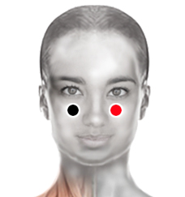

Fibromialgia
Pares
pómulo - pómulo
cervical 1 - píloro
palma - palma

Generalidades:
Consiste en dolores musculares crónicos. Pueden presentarse puntos muy sensibles al tacto en lugares específicos como cuello, hombros, brazos, cadera o piernas. Condición que afecta de diversas formas a la persona como:
La medicina alopática desconoce las causas de esta afección. El biomagnetismo médico (Dr. Goiz) ha encontrado varios pares relacionados, los más comunes: Meningitis, Plasmodium vivax, XMRV Virus